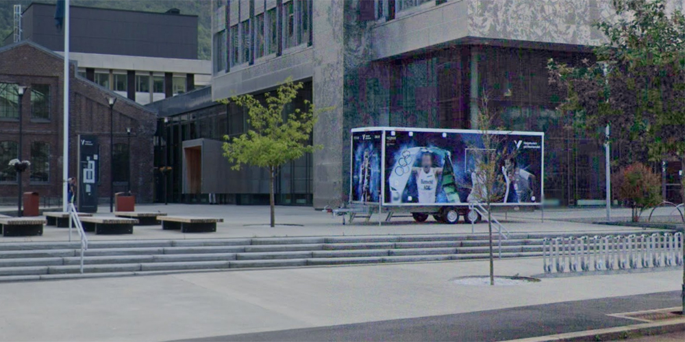
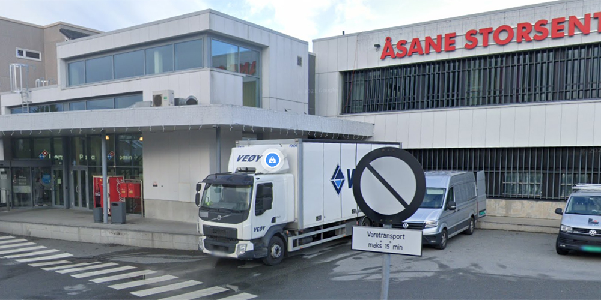
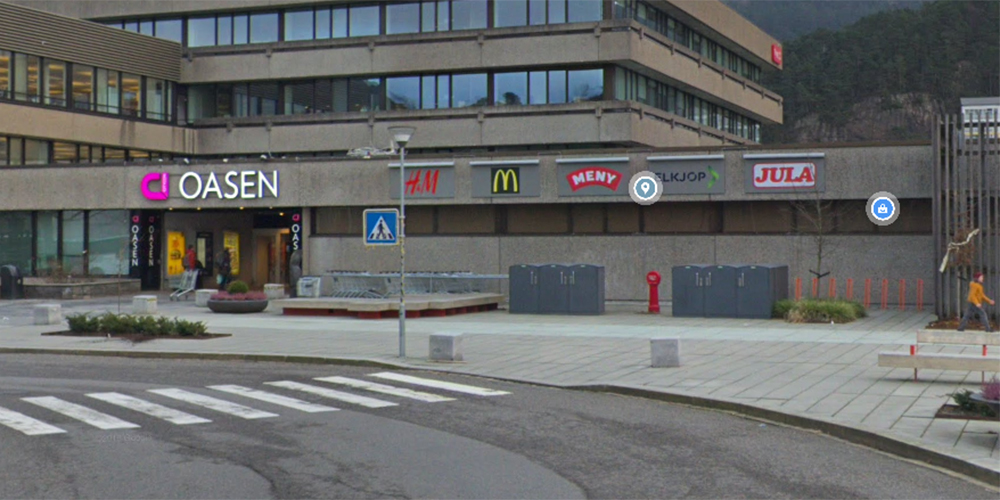

Bergen
Sentrum/Kronstad
Punktet ligger ved KLEDELIs hovedkvarter lokalisert på Kronstad, like utenfor Bergens sentrum.

Åsane
Punktet ligger ved Åsane Storsenter(gamle Åsane Senter), ved utgangen i sør, nærmest Åsane Terminal

Fyllingsdalen
Punktet ligger ved Oasen Senter, ved utgangen nærmest Oasen Terminal.

Fana
Punktet ligger ved Lagunen Storsenter, ved innkjørselen til senteret.